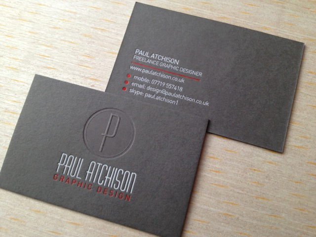

Trong những dòng card visit cao cấp chúng ta không thể không nhắc đến in danh thiếp dập nổi.
Danh thiếp dập nổi bao gồm dập nổi không màu & dập nổi màu in.
Dập nổi có màu hay không màu đều yêu cầu độ chính xác cao
Đây là dòng card visit cao cấp được ưa thích tại nước ngoài.
Kỹ thuật dập nổi, dập chìm là kỹ thuật thuật rất đặc biệt trong gia công Card Visit.
Với công nghệ dập nổi giúp cho chiếc card visit có hiệu ứng nôi 3D ấn tượng.
Phần dập nổi sẽ ngay lập tức thu hút sự chú ý của người nhận. Logo, tên công ty,
hình ảnh đại diện công ty sẽ trở nên nổi bật đặc biệt hơn. Thế nhưng in danh thiếp dập nổi không hề đơn giản.
Dưới đây là các lưu ý để bạn in được chiếc danh thiếp dập nổi đẹp nhất.

Card visit có thể in trên nhiều loại giấy, card thường sẽ in trên giấy Couche, nhưng đối với những loại card cao cấp thì nên chọn giấy Mỹ thuật vì ở đây bạn đang hướng đến dòng danh thiếp cao cấp giấy mỹ thuật sẽ có mùi thơm, có vân hoặc bóng, khi cầm vào sẽ cảm nhận được độ sần của giấy Giấy mỹ thuật sẽ đảm bảo về độ chính xác khi in, không lem màu như những dòng card dùng giấy Couche Đảm bảo sản phẩm in sẽ không có độ chênh lệch so với file thiết kế, thêm Dập Nổi sẽ Toát lên vẻ sang trọng của bộ name card. Một name card mỹ thuật dập nổi sẽ làm bạn nổi bật hơn với khách hàng và niềm tin của khách hàng dành cho bạn sẽ được nhân lên gấp bội
Hãy liên hệ với chúng tôi, Để có một bộ name card dập nổi như ý :
Công ty TNHH Thiết Kế & Quảng Cáo Song Việt
Địa chỉ: 30 đường số 6, phường Bình Hưng Hòa B, Bình Tân, TP.HCM
Điện thoại: 0908 77 65 69
Email: inansongviet@gmail.com
Chat ngay để được tư vấn miễn phí:
m.me/inansongviet